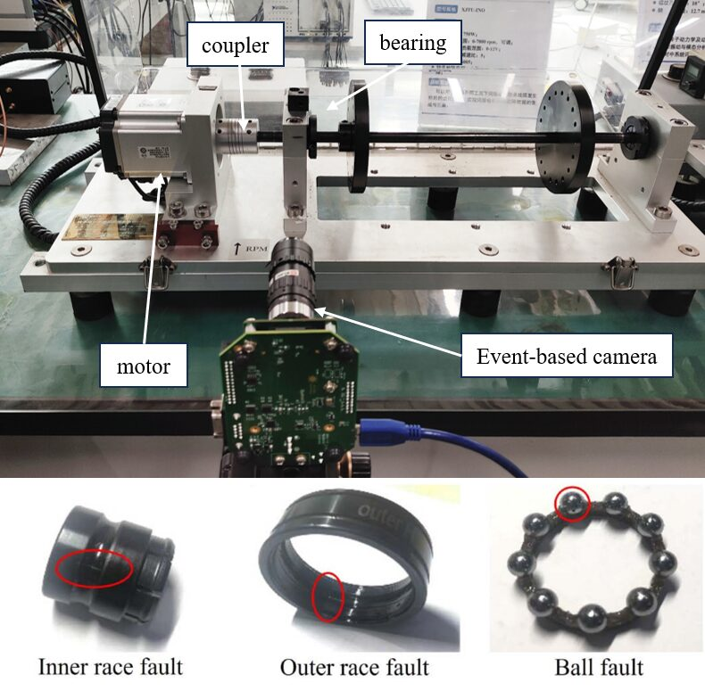
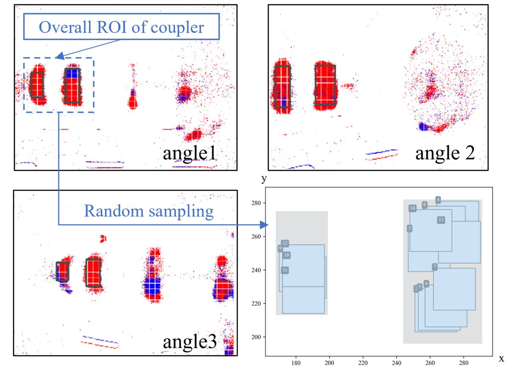
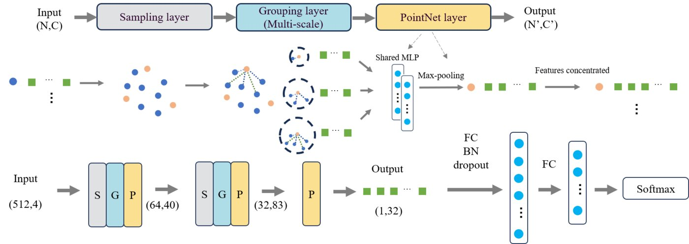

Xi'an Jiaotong University · 2024 IEEE Global Reliability & PHM Conference (PHM-Beijing)

This work is one of the first to use a 3D point cloud algorithm on event data for machine fault diagnosis. Event cameras (Dynamic Vision Sensors) report per-pixel brightness changes with microsecond timing, instead of full frames. We represent each slice of the event stream as a geometric point cloud over (x, y, t), then classify it with a deep point cloud network (PointNet++). We test the method on diagnosing faults in a rotating machine with an event camera.


@inproceedings{xu2024dynamic,
title = {Dynamic Vision-Enabled Machine Condition Monitoring:
A Point Cloud-Based Diagnostic Methodology},
author = {Xu, Tongmiao and Cai, Dehao and Yang, Shaojie and Gu, Shuai and Li, Xiang},
booktitle = {2024 Global Reliability and Prognostics and Health Management Conference (PHM-Beijing)},
year = {2024}
}